Home / Past papers / MLP End Term / this paper
IIT M DEGREE AN EXAM QDB4 31 Aug 2025 - 31 Aug 2025
Elapsed 00:00
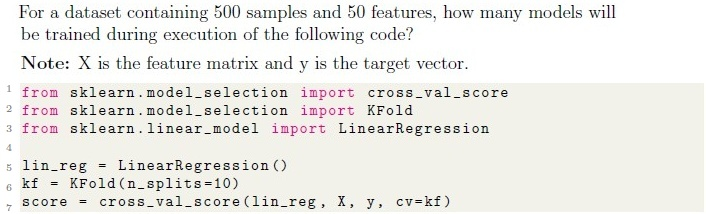
- 10
- 50
- 100
- 500
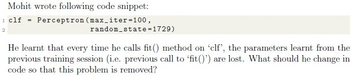
- Set ‘warm start=True’
- Combine training data from different training sessions
- Set ‘retain parameters=True’
- This problem can not be solved.
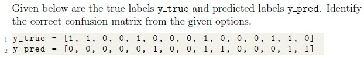
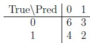
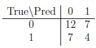
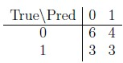
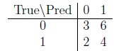
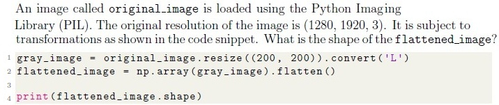
- (200, 200, 3)
- (40000, )
- (200, 200, 1)
- (40000, 3)
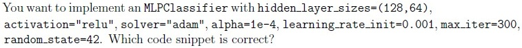
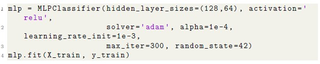
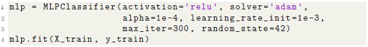
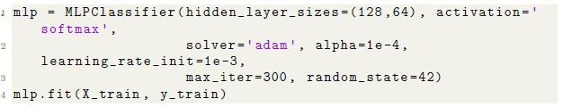
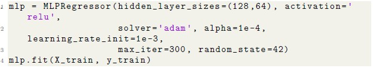
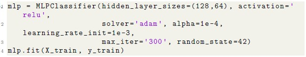
Which of the following statements about the Augmented Dickey-Fuller (ADF) test is correct?
- The test is used to detect seasonality in a time series
- A low p-value (e.g., < 0.05) indicates the time series is non-stationary
- The test’s null hypothesis is that the time series is stationary
- A low p-value (e.g., < 0.05) indicates the time series is stationary
How to change the loss function in SGDRegressor to Huber loss?
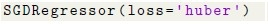
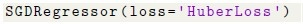
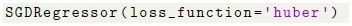
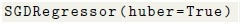
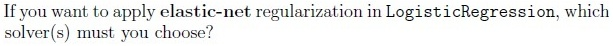
- liblinear
- lbfgs
- saga
- newton-cg
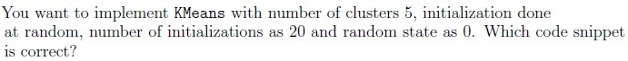
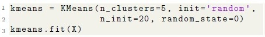
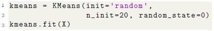
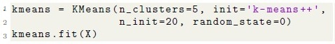
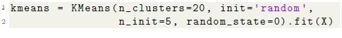
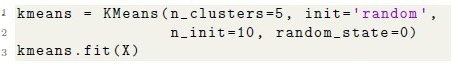
Which of the following best describes the components of a time series in a classical multiplicative decomposition model?
- The series is a product of a trend component and an error component only
- The series is a sum of a trend component, a seasonal component, and acyclical component
- The series is a product of a trend component, a seasonal component, and anerror component
- The series is a sum of a trend component, a seasonal component, and a errorcomponent
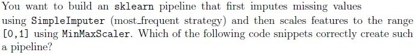
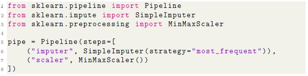
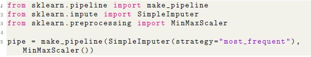
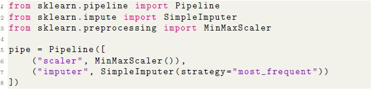
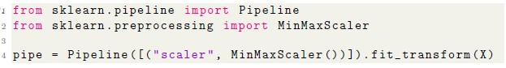
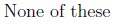
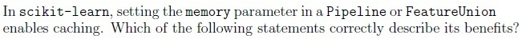
- Saves computation time by reusing results of expensive transformations wheninputs and parameters have not changed.
- Helps speed up repeated runs of cross-validation involving the sametransformation steps.
- Reduces CPU usage by running transformations in parallel threadsautomatically.
- Improves efficiency in hyperparameter search by avoiding redundantcomputations in pipeline steps.
- Guarantees better generalization performance on the test set.
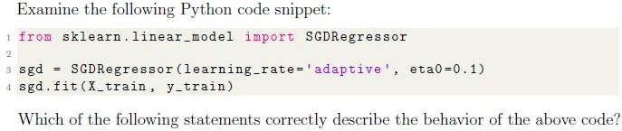
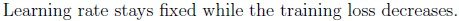
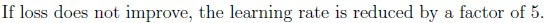
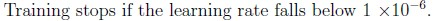
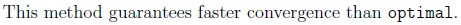
A medical diagnosis model is used to detect a rare disease that occurs in 0.5% of the population. A model is trained on this data, which of the following evaluation metrics are suitable for measuring effectiveness of this model:
- accuracy
- precision
- recall
- F-1 score

- The elbow method involves plotting the number of clusters against the inertiaand identifying a point where the decrease in inertia slows down.
- The elbow point represents the cluster count beyond which additional clustersdo not significantly improve the model fit.
- The metric used in the elbow method is the silhouette score.
- The elbow point is always the smallest number of clusters in the plot.
- The elbow method may sometimes be inconclusive if no clear bend is visible inthe curve.
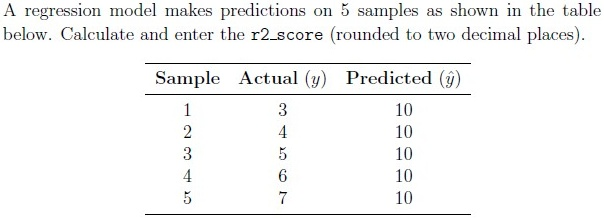
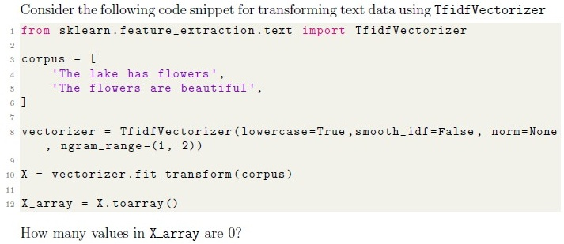
Comprehension passage - the questions below it refer to this
Based on the above data, answer the given subquestions.
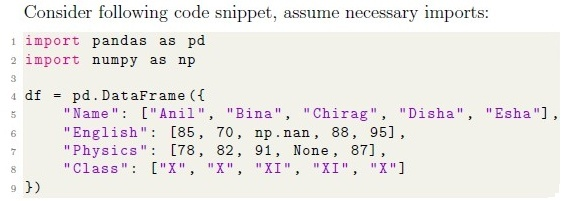
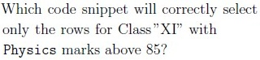
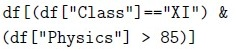
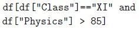
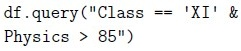
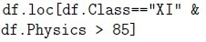
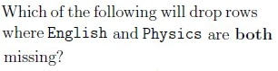
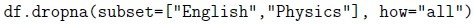
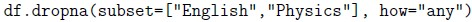
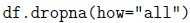
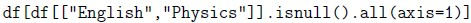
Comprehension passage - the questions below it refer to this
Based on the above data, answer the given subquestions.
select the appropriate values for A and B in the loss parameter to ensure that all model fits execute successfully.
Comprehension passage - the questions below it refer to this
Based on the above data, answer the given subquestions.
Calculate and enter the value of X (truncated to two decimal places).
Calculate and enter the value of Y (truncated to two decimal places).
Answer key
- Q1 (MCQ, 2 marks): A
- Q2 (MCQ, 2 marks): A
- Q3 (MCQ, 2 marks): A
- Q4 (MCQ, 2 marks): B
- Q5 (MCQ, 2 marks): A
- Q6 (MCQ, 2 marks): D
- Q7 (MCQ, 1 marks): A
- Q8 (MCQ, 1 marks): C
- Q9 (MCQ, 1 marks): A
- Q10 (MCQ, 3 marks): C
- Q11 (MSQ, 3 marks): A, B
- Q12 (MSQ, 2 marks): A, B, D
- Q13 (MSQ, 2 marks): A, B, C
- Q14 (MSQ, 2 marks): B, C, D
- Q15 (MSQ, 2 marks): A, B, E
- Q16 (SA, 3 marks): -12.5
- Q17 (SA, 3 marks): 10
- Q18 (MSQ, 1 marks): A, C
- Q19 (MCQ, 2 marks): A
- Q20 (MSQ, 2 marks): A, C
- Q21 (MCQ, 2 marks): D
- Q22 (MSQ, 2 marks): B, D
- Q23 (SA, 1 marks): 72
- Q24 (SA, 1 marks): 0.97 to 0.99
- Q25 (SA, 1 marks): 0.81 to 0.83
- Q26 (SA, 3 marks): 4.1 to 4.3